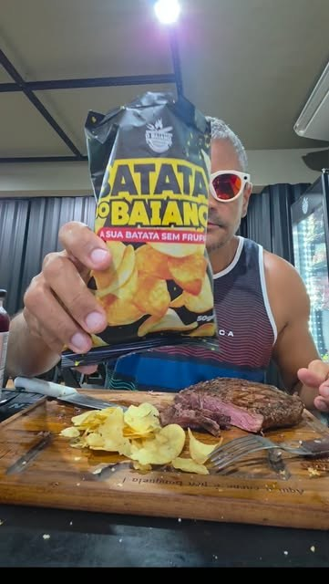

7 fitas, 1 Baiano.
Toque na fita pra abrir a unidade.
Qual fita é a sua?
A mais perto de você, pela localização do celular ou pelo bairro.
Aqui é assim. Você escolhe  a peça.
A gente assa
a peça.
A gente assa  na brasa.
Batata raiz
na brasa.
Batata raiz

feita com casca."A melhor carne da sua vida com uma batata raiz feita com casca. Aqui é sem frufru." E pra quem não come água: Sincorá ou Campo Largo.
Abrir o cardápioQuinta tem axé
na Pituba.
Autorais no O Baiano Pituba. Couvert com pulseira no braço. Reserva a mesa antes que lota.
Playlist de axé
A mesma que toca na casa. Bota pra tocar no churrasco de casa também.
Praia do Forte

Geramos movimento numa área até então pouco frequentada. Axé tocando o tempo todo e sempre a melhor carne do mundo. Muitas famílias reunidas.
Palavras do próprio Baiano, na legenda do Instagram.
Av. do Farol, 2907, no estacionamento do Projeto Baleia Jubarte. Abre às 14h.
Abrir a fita da Praia do FortePedir ou reservar
Preenche, confere a mensagem e manda. Cai direto no WhatsApp da unidade.